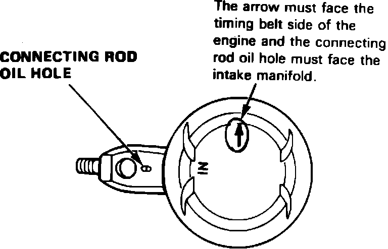
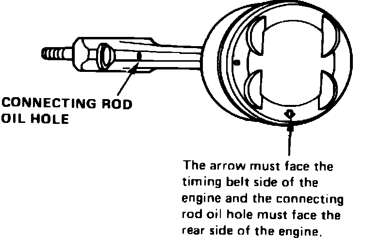

Piston: Service and Repair
Fig. 29 Piston & connecting rod assembly. Integra:

Fig. 30 Piston & connecting rod assembly. Legend:

When assembling connecting rod onto piston, the oil hole in the connecting rod must be on the same side as the mark on the piston head, Figs. 29 and 30. On Integra models, when installing piston and connecting rod assemblies into engine, the arrow on piston head must face timing belt side of engine and connecting rod oil hole must face intake manifold. On Legend models, when installing connecting rod and piston assemblies into engine, the arrow on piston head must face rear side of engine.